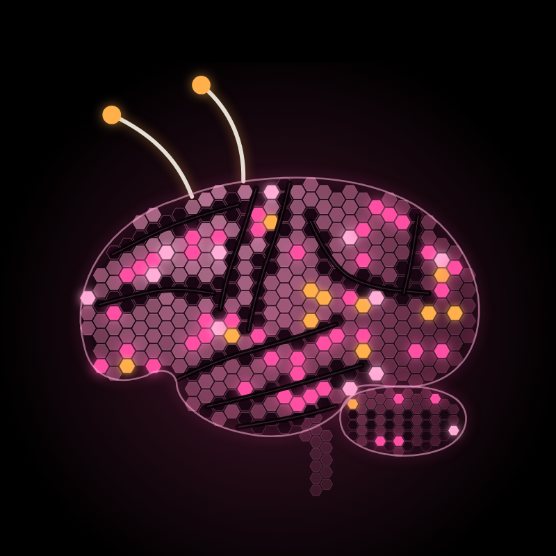
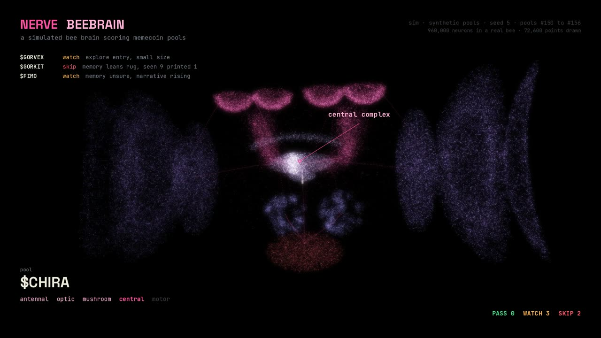
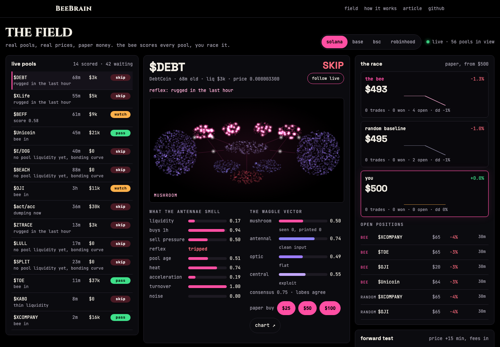

BeeBrain
inside the hive mind
a honeybee brain, simulated, scoring memecoin pools inside nerve. five lobes. one waggle vector. you click.
sim on synthetic pools · field on real pools · paper accounts · no orders

FW1FhMWeGwyLQLt8HaZ7Zjkoecf7FZNSw8ZC3fMApump

the field
race the bee on real pools
the same brain, dropped on live memecoin pools from solana, base, bsc and robinhood chain. it scores each one through five lobes. you trade the same pools with $500 of paper.
a random baseline trades beside you both, behind the same reflexes. every pool the bee scores is checked again 15 minutes later, so its verdicts get a real hit rate, fees in.
when PASS beats SKIP over 300 pools and the bee beats random, the graduation gate opens. until then it is paper only.

what it is
a learning node for a memecoin desk
a simulated honeybee brain. 2,000 kenyon cells, a 5% sparse code.
it scores every new pool through five lobes. after the reflexes, before the models.
it answers with a vector, not one number. you see which part agrees and which does not.
it learns from closed trades. a print is sugar, a rug is punishment.
how it works
five lobes, five jobs on the desk
antennal
first relay for smell, glomeruli
eight glomeruli, one per pool feature. measures how noisy the input is.
optic
vision, motion, shape
reads 60 ticks of narrative heat. sees the shape of the market.
mushroom
association and memory
2,000 kenyon cells, each samples 6 of 32 inputs. only the top 5% fire.
central
navigation, action selection
a ring attractor bump settles on the score. explore or exploit.
motor
feeding, home of vummx1
PASS, WATCH or SKIP. the result flows back as sugar or punishment.

the waggle vector
the output is a vector, not a number
a forager's dance carries direction, distance and quality. beebrain answers with one value per lobe, so a 0.73 no longer hides a lobe at 0.40.
{
"pool": "$BONGOR",
"mushroom": {
"value": 0.2,
"seen": 9,
"printed": 1
},
"antennal": {
"value": 0.65,
"noise": 0.14
},
"optic": {
"value": 0.51,
"heat": 0.42,
"accel": 0.61
},
"central": {
"value": 0.41,
"mode": "exploit"
},
"motor": {
"verdict": "SKIP",
"flag": false
},
"consensus": 0.6,
"kenyon_active": 100
}seed 5, pool 120. beebrain sim --seeds 5 --vector 120

results so far
ten seeds, one brain, nine days

| run | final | trades | wins | max drawdown |
|---|---|---|---|---|
| seed 6 | $6,966 | 49 | 67% | -22% |
| seed 8 | $6,661 | 43 | 65% | -15% |
| seed 4 | $2,942 | 41 | 59% | -18% |
| seed 7 | $1,998 | 39 | 62% | -22% |
| seed 1 | $1,695 | 30 | 67% | -16% |
| seed 5 | $1,526 | 40 | 55% | -22% |
| seed 9 | $1,049 | 27 | 56% | -21% |
| seed 3 | $754 | 22 | 36% | -20% |
| seed 0 | $589 | 19 | 42% | -12% |
| seed 2 | $486 | 25 | 44% | -31% |
synthetic pools. the edge was planted. this proves the mechanism, not the market.

first contact
a solana trained bee on robinhood chain
a node graph page. the bee meets a chain it never saw, locks into explore while the input is noisy, then learns to cluster pools by deployer.
the patterns did not transfer. the structure that finds them did. the deployer edge was planted in this sim too.

what it does not do
limits
- it is scaled down. a real bee has about 960,000 neurons. the model runs 2,000 kenyon cells.
- it is not a connectome. there is no public whole brain honeybee wiring file. the architecture follows published biology, the numbers inside are mine.
- its scores are not probabilities. a mushroom value of 0.81 leans toward past prints. it is uncalibrated.
- it can only learn edges that exist. in both sims the edge was planted. on a live chain it may be weaker, slower or gone.
- it does not trade for you yet. this release places no orders. the field is paper money on real prices.
roadmap
next builds
- talks to grok. grok reads the whole waggle vector and waits a cycle when the antennal lobe flags dirty data.
- meets jev. the bee learns when jev is right and starts predicting its answer, so repeat calls can be skipped.
- routes the models. the central complex sends each pool to jev, grok or the deep analyst, by pool type.
- opus 5.5 as a sixth lobe. unsure pools go to opus, which reads the text the bee cannot.
- the hive. one bee per chain, separate antennae, a shared mushroom memory.
- live execution. opt in, small size, only for a bee that opened the graduation gate on paper.
source
run it yourself
git clone https://github.com/h100envy/beebrain
cd beebrain
pip install -e .
beebrain terminal # the sim
beebrain trade # the field, live pools, paper money
beebrain scan --json # one pass over the live field, for your own tools